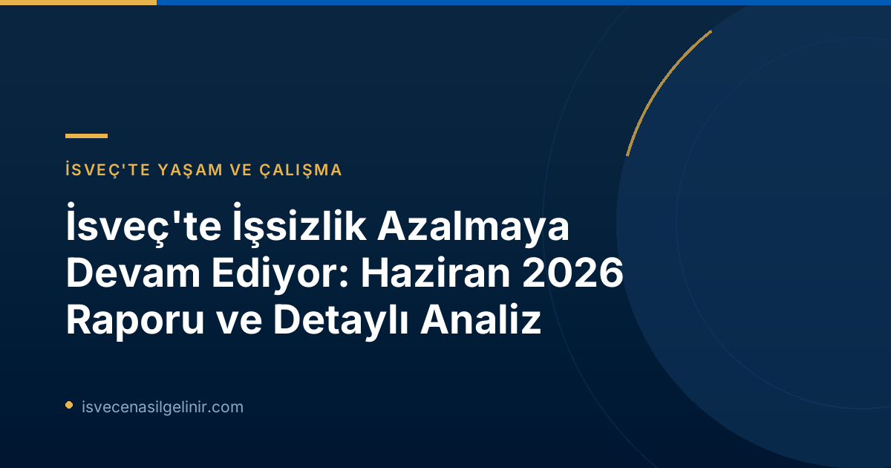

İsveç İşgücü Piyasasında Genel Durum: Haziran 2026 Verileri
Haziran 2026 itibarıyla İsveç'te işsizlik oranları kayda değer bir düşüş gösterdi. Arbetsförmedlingen verilerine göre, toplam 344.000 kişi işsiz olarak kayıtlıydı. Bu rakam, bir önceki yılın aynı dönemine (Haziran 2025) kıyasla 22.000 kişilik önemli bir azalmayı işaret ediyor. İşsizlik seviyesi, kayıtlı işgücüne oranı açısından yıllık bazda yarım puan azalarak %6,9'dan %6,4'e geriledi.| Gösterge | Haziran 2026 | Haziran 2025 | Değişim |
|---|---|---|---|
| Kayıtlı İşsiz Sayısı | 344.357 | 366.496 | -22.139 |
| İşsizlik Oranı (Yüzde) | %6,4 | %6,9 | -0,5 pp |
| Genç İşsiz Sayısı (18-24 yaş) | 39.134 | 41.939 | -2.805 |
| Genç İşsizlik Oranı (Yüzde) | %7,3 | %7,8 | -0,5 pp |
| Uzun Dönem İşsiz Sayısı (≥ 12 ay) | 148.497 | 151.979 | -3.482 |
| Yeni İş Arayan Sayısı (Haziran) | 42.980 | 44.099 | -1.119 |
| İş Bulan Sayısı (Haziran) | 35.673 | 32.405 | +3.268 |
| İşten Çıkarılacak Olanların Sayısı | 2.857 | 4.606 | -1.749 |
Detaylı Analiz: Kimler Etkilendi?
İşsizlikteki bu olumlu gelişim, ülkenin genelinde ve tüm demografik gruplarda gözlemlendi. Hem erkekler hem de kadınlar, hem İsveç doğumlular hem de yurt dışında doğanlar arasında işsizlik oranlarında düşüş yaşandı.Cinsiyet ve Doğum Yerine Göre Dağılım
Arbetsförmedlingen'in faaliyet istatistikleri, açıkça işsiz olan veya aktif destek programlarına katılan kayıtlı işsiz sayısının tüm gruplarda ve ülke genelinde azaldığını gösteriyor. Bu düşüş, cinsiyet (erkek ve kadın) ve doğum yeri (yerli ve yabancı doğumlu) fark etmeksizin tüm kategorilerde yaşandı. Özellikle yurt dışında doğanlar arasında uzun dönem işsizlikteki düşüş dikkat çekici.Genç İşsizliği (18-24 Yaş)
Haziran ayında 18-24 yaş arasındaki kayıtlı işsiz gençlerin sayısı yaklaşık 39.000 idi. Bu rakam, bir önceki yılın aynı ayına göre yaklaşık 3.000 kişilik bir azalışı temsil etmektedir. Genç işsizlik oranının %7,3'e gerilemesi (%7,8'den) gençlerin iş piyasasına katılımında ve istihdam bulmalarında olumlu bir ivme olduğunu göstermektedir.Uzun Dönem İşsizlik – Zorlu Bir Mücadele
En az bir yıldır işsiz olan kişilerin sayısı Haziran 2026'da 148.000 olarak kaydedildi. Bu sayı, 2025 yılındaki 152.000 rakamına göre bir düşüşe işaret ediyor. Bu grubun yaklaşık yarısı Avrupa dışındaki ülkelerde doğmuş kişilerden oluşuyor. Ancak son dönemde bu grubun yerli doğumlu uzun dönem işsizlere kıyasla daha olumlu bir gelişim gösterdiği belirtiliyor. Haziran ayında, Avrupa dışı doğumlu yaklaşık 68.000 kişi en az on iki aydır işsiz durumdaydı; bu, geçen yılın aynı ayına göre 6.000 kişilik bir düşüş.Bölgesel İşsizlik Haritası: İsveç'in Dört Bir Yanı
İsveç'in çeşitli bölgelerinde işsizlik oranları arasında hala önemli farklılıklar bulunsa da, genel iyileşme eğilimi tüm illerde gözlemlendi.Bölgesel İşsizlik Oranları (Haziran 2026)
- En Yüksek İşsizlik Oranları:
- Skåne: %8,4
- Södermanland: %8,0
- Västmanland: %7,8
- En Düşük İşsizlik Oranı:
- Norrbotten: %3,4
Arbetsförmedlingen Aktivliği ve İstihdam Dinamikleri
Arbetsförmedlingen'e yapılan başvurular ve istihdam edilen kişi sayıları da iş piyasasındaki dinamizmi yansıtmaktadır. Haziran ayında yaklaşık 43.000 kişi Arbetsförmedlingen'e iş arayan olarak kaydoldu. Bu, geçen yılın aynı ayına göre 1.000 kişi daha azdır. Aynı dönemde, Arbetsförmedlingen'den kayıtları silinenlerin 36.000'i bir iş buldu. Bu sayı, Haziran 2025'e göre 3.000 kişilik bir artışı ifade ediyor. İş bulan kişi sayısındaki bu artış, işgücü piyasasının hareketliliğini ve iş arayanlar için fırsatların arttığını gösteriyor. İş bulma süreçleri, İsveç toplumuna entegrasyonun önemli bir parçasıdır ve bu süreçte İsveç Vatandaşlık Sınavı gibi adımlar da kalıcı yerleşim için kritik olabilir. İşten çıkarılma bildirimleri de önemli ölçüde azaldı. Haziran 2026'da 2.857 kişi işten çıkarılma bildiriminde bulundu; bu, Haziran 2025'teki 4.606 kişiye kıyasla önemli bir düşüş.İsveç İşsizlik İstatistiklerine Dair Önemli Bilgiler
Arbetsförmedlingen'in aylık basın bültenleri, kurumun faaliyet istatistiklerini rapor eder. Bu raporlar, kayıtlı işsizler ve yeni bildirilen açık pozisyonlar gibi Arbetsförmedlingen kayıtlarına dayanmaktadır. Arbetsförmedlingen'in işsizlik istatistikleri, kuruma kayıtlı olan iş arayanların farklı kategorilerini gösterir. Bunlardan biri "açıkça işsiz" (öppet arbetslösa) olanlardır; yani işi olmayan, aktif olarak iş arayan ve hemen işe başlayabilecek durumda olan kişiler. Diğeri ise "aktivite destek programlarındaki iş arayanlar" (sökande i program med aktivitetsstöd). Bu iki grup birlikte "kayıtlı işsizler" olarak adlandırılır. **İstatistik Metodolojisindeki Değişiklik:** * 2024 yılında işgücü büyüklüğünü ve dolayısıyla göreceli işsizlik seviyesini hesaplama yöntemi değiştirildi. * 2026 için sunulan istatistiklerde yaş aralığı 16-66 iken, 2025 için gösterilen istatistiklerde yaş aralığı 16-65 idi. * Arbetsförmedlingen'in faaliyet istatistikleri İsveç'in resmi istatistikleri arasında yer almamaktadır. Resmi işsizlik istatistikleri, İstatistik Merkezi (SCB) tarafından İşgücü Araştırması (AKU) kapsamında rapor edilmektedir.Geleceğe Bakış: Temmuz 2026 Verileri Ne Zaman Açıklanacak?
Arbetsförmedlingen, Temmuz 2026 ayına ait faaliyet istatistiklerini 13 Ağustos 2026 tarihinde, saat 06:00'da yayımlayacaktır. Gelecekteki bu raporlar, İsveç işgücü piyasasındaki eğilimleri daha yakından takip etmemiz için önemli bir kaynak olacaktır.Referanslar:
- Arbetsförmedlingen Pressmeddelande, 16 Temmuz 2026: Arbetslösheten fortsätter minska enligt prognos
- sverigemedborgarskapsprov.com
İsveç'e Mi Gelmeyi Düşünüyorsunuz?
İsveç'te çalışma, yaşama ve vatandaşlık konularında güncel ve detaylı bilgilere ulaşmak için sitemizi ziyaret edin. İsveç göçmenlik süreçleri, vatandaşlık testi ve iş piyasası hakkında aradığınız her şey burada!